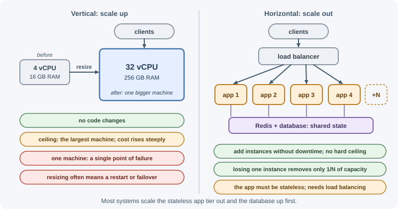
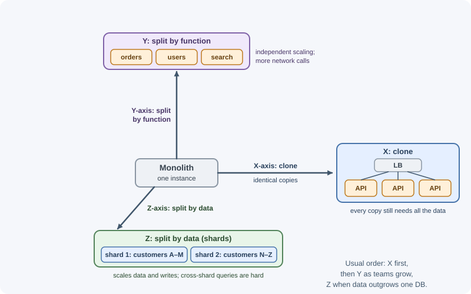

Scalability Fundamentals¶
Scalability is a system's ability to handle more work (more users, more requests, more data) while still meeting its performance goals, by adding resources in a reasonable, cost-effective way. A scalable system is not one that is fast today; it is one with a clear, affordable path to handling ten or a hundred times today's load.
Why it matters¶
A design that works for a demo with ten users can fail completely at ten thousand: responses slow down, databases run out of connections, and queues back up. On the other hand, building for massive scale too early wastes money and adds complexity a small product does not need. Knowing how to describe load, find bottlenecks, and choose between scaling approaches lets you scale the right part of the system at the right time.
Real-world usage¶
Large companies usually follow the same path: scale up as far as is sensible, then split by function, then split the data.
- Shopify: scale up, then shard, then isolate (the Z axis). "In 2015, it was no longer possible to continue buying a larger database server", so Shopify sharded its database. When one shard failing could still break platform-wide actions, it introduced pods: groups of shops on fully isolated datastores, with no action allowed to reach across pods, so adding a pod adds capacity without interfering with the others. (Shopify Engineering)
- GitHub: bigger machines until they were not enough (the Y axis for
data). GitHub.com was built around one main MySQL cluster,
mysql1, and kept "moving to newer and bigger machines to scale up". From 2019 it grouped tables into schema domains, enforced the boundaries with SQL linters, then moved those domains to separate clusters. By 2021 the same tables served 1.2 million queries/s across several clusters, and the average load on each host had halved. (GitHub Blog, 2021) - Notion: why not just keep scaling vertically? Notion's answer was that "playing Cookie Clicker with the RDS 'Resize Instance' button is not a viable long-term strategy": maintenance such as Postgres VACUUM began to stall well before the hardware limit. It sharded by workspace ID into 480 logical shards on 32 physical databases. (Notion blog, 2021)
- Figma: the incremental route. Figma's database stack grew almost 100x from 2020. Moving groups of tables onto their own databases ("vertical partitioning") was "a relatively easy and very impactful scaling lever" that bought time to build horizontal sharding on its existing RDS Postgres. (Figma blog, 2024)
- AKF Partners: the scale cube. The X/Y/Z model used below comes from The Art of Scalability by Martin L. Abbott and Michael T. Fisher. (AKF Partners)
Popular tools and providers¶
| Need | Common choices |
|---|---|
| Spreading traffic (X axis) | Cloud load balancers (AWS ALB/NLB, Google Cloud Load Balancing, Azure Load Balancer), NGINX, HAProxy, Envoy |
| Adding instances automatically | Kubernetes HPA, KEDA, cloud autoscaling groups |
| Taking load off the database | Redis or Valkey caches, CDNs (CloudFront, Cloudflare, Fastly), read replicas |
| Splitting data (Z axis) | Application-level sharding, Vitess (MySQL), Citus (PostgreSQL), MongoDB sharding, managed distributed SQL (Spanner, CockroachDB, TiDB) |
| Finding the bottleneck | Load-testing tools (k6, Gatling, JMeter, Locust), APM and tracing (OpenTelemetry) |
How it works¶
Describing load: load parameters¶
You cannot discuss scaling without saying what is growing. Load parameters are the numbers that describe the workload:
| Load parameter | Example |
|---|---|
| Requests per second | 2,000 API requests/s at peak |
| Read/write ratio | 95% reads, 5% writes |
| Concurrent users or connections | 50,000 open WebSocket connections |
| Data volume and growth | 2 TB, growing 100 GB/month |
| Payload sizes | Average response 4 KB; uploads up to 50 MB |
| Fan-out | One post delivered to 1,000 followers' feeds |
| Peak-to-average ratio | Traffic 5× higher at 9 a.m. or during a sale |
Two systems with the same requests per second can need very different designs if one is read-heavy and the other write-heavy, or if one has huge fan-out.
Throughput and latency¶
- Throughput is how much work is completed per unit of time (requests per second, messages per second).
- Latency is how long one operation takes (milliseconds per request).
They are related but different. A system can have high throughput and poor latency (a batch pipeline), or low latency and limited throughput. As load approaches a component's capacity, queues form and latency rises sharply:
latency
│ ╱
│ ╱
│ ╱
│ _ ─ ╯ <- queueing: latency explodes
│ ___________________ ─ ─ near saturation
└──────────────────────────────────── utilization
0% ~70–80% 100%
The simplest queueing model (one server, random arrivals, the M/M/1 queue) shows why. Average response time is the service time divided by (1 − utilization):
utilization 50% 80% 90% 95%
response time 2× 5× 10× 20× the time one request takes alone
Real systems differ in detail, but the shape is the same: the last 10–20% of capacity costs a lot of latency. This is why teams keep headroom instead of running servers at 100%. Latency is usually described with percentiles (p50, p95, p99) rather than averages; see performance and latency.
Vertical and horizontal scaling¶
Vertical scaling (scale up) gives one machine more CPU, memory, or faster disks. Horizontal scaling (scale out) adds more machines or instances and spreads work across them.

| Vertical (scale up) | Horizontal (scale out) | |
|---|---|---|
| How | Bigger machine | More machines |
| Code changes | Usually none | Application must be stateless or partitioned |
| Upper limit | The largest machine available | Very high, in principle |
| Cost | Sized for peak and paid for around the clock; each step up is a big jump | Pay per instance; capacity can follow load up and down |
| Failure impact | One machine is a single point of failure | Losing one instance removes only part of capacity |
| Downtime to scale | Often a restart or failover | Add instances without downtime |
| Complexity | Low | Load balancing, shared state, coordination |
| Good for | Databases early on, quick wins | Stateless web and API tiers, workers |
Most real systems use both: horizontally scaled stateless application servers in front of a database that is first scaled vertically and later scaled with replicas and partitioning (see database scaling).
Common bottlenecks¶
| Resource | Symptoms | Typical fixes |
|---|---|---|
| CPU | High CPU, latency grows with load | Optimize code, scale out, move CPU-heavy work to workers |
| Memory | Swapping, out-of-memory restarts, GC pauses | Fix leaks, reduce per-request memory, bigger instances |
| Disk I/O | High I/O wait, slow queries | Indexes, caching, faster storage |
| Database | Slow queries, connection limits, lock waits | Query and index tuning, caching, replicas, partitioning |
| Network | Bandwidth limits, high transfer costs | Compression, CDN, smaller payloads |
| Locks and contention | Throughput stops rising, many waiting threads | Reduce shared mutable state, finer-grained locks, partition work |
| External services | Timeouts, rate-limit errors | Caching, queues, retries with backoff, quotas |
In Node.js, a common bottleneck is synchronous CPU work blocking the event loop; see the event loop.
Amdahl's law: why adding machines has limits¶
If part of a job cannot be parallelized, that part limits the maximum speed-up no matter how many machines you add.
speed-up(N) = 1 / ((1 − p) + p / N)
p = fraction of the work that can run in parallel
N = number of workers
p = 0.95: N = 10 -> 6.9× N = 100 -> 16.8× N = ∞ -> 20×
p = 0.50: N = 10 -> 1.8× N = ∞ -> 2×
In systems terms: if every request must pass through one shared component (a single database primary, a global lock, one queue consumer), that component caps total throughput. In practice coordination costs can even make throughput fall as more nodes are added, which is why scalable designs minimize shared state and cross-node coordination.
The scale cube¶
The AKF Scale Cube, from AKF Partners' book The Art of Scalability by Martin L. Abbott and Michael T. Fisher, names three independent ways to scale:

| Axis | Technique | Example | Trade-off |
|---|---|---|---|
| X | Run identical copies (of services or data) | 10 instances of the API behind a load balancer; database read replicas | Simple; every copy still needs all the data |
| Y | Decompose by function | Separate checkout, catalog, and search services, each with its own data | Independent scaling and teams; distributed-system complexity |
| Z | Partition by customer or data key | Customers A–M on shard 1, N–Z on shard 2 | Scales data and writes; cross-partition queries are hard |
Most systems start with the X axis, add Y as teams and features grow, and use Z when data or write volume outgrows one database. See monolith, modular monolith, and microservices.
Shared-nothing architecture¶
In a shared-nothing design, each node has its own CPU, memory, and storage and does not share them with others. Nodes coordinate only over the network. Stateless web servers are shared-nothing: any request can go to any server. Partitioned databases are shared-nothing at the data level: each shard owns its slice. Shared-nothing systems scale out well because adding a node adds capacity without adding contention on a shared resource.
Measure before scaling¶
Scaling the wrong component wastes money and can move the bottleneck somewhere worse (for example, more app servers overwhelming the database).
- Define goals: for example, "p99 under 300 ms at 3,000 requests/s".
- Measure current behavior with metrics and tracing.
- Load-test to find where latency or errors rise; see performance testing.
- Fix or scale the bottleneck, then measure again.
- Repeat; the bottleneck moves after each fix.
When to use and when not to use¶
- Scale up first when one machine is clearly enough for the next year of growth. It is the cheapest change in engineering time, and databases in particular benefit.
- Scale out stateless tiers (web, API, workers) from the start: run at least two instances for availability, and add more as load grows.
- Split by function (Y axis) when parts of the system have very different load or are owned by different teams, not just to "do microservices".
- Partition data (Z axis) only when the data or write volume, or maintenance on huge tables, outgrows the largest sensible machine. It is the most expensive axis to adopt and to undo.
- Do not scale ahead of evidence: measure first. Designing for millions of users before you have thousands mostly buys complexity.
| Question | Vertical (scale up) | Horizontal (scale out) |
|---|---|---|
| Load fits on one machine with headroom for 6–12 months? | Yes: simplest option | Not needed yet, except two instances for availability |
| Stateless component (API, worker)? | Works, but leaves a single point of failure | Preferred: add or remove instances freely |
| Stateful single-writer component (database primary)? | Usually the first step | Needs replicas, partitioning, or sharding; much more work |
| Need to survive the loss of a machine or zone? | No: one machine is one failure | Yes: spread instances across zones |
| Load swings a lot during the day? | Pays for peak all day | Autoscaling follows the load |
| Already on the largest sensible instance, or maintenance is slowing down? | No more room | Time to partition (see database scaling) |
Practical examples¶
Estimating whether to scale out¶
Current: 4 API instances, each handles ~300 req/s at 70% CPU (the safe limit)
Capacity: 4 × 300 = 1,200 req/s
Expected peak next quarter: 2,000 req/s, plus 30% headroom = 2,600 req/s
Instances needed: 2,600 / 300 = 8.67, so 9 instances
Plus one spare (N+1) so losing an instance keeps full capacity: 10 instances
Check the next bottleneck: 2,600 req/s × 2 queries per request = 5,200 queries/s
Can the database handle 5,200 queries/s? If not, add caching or replicas first.
Capacity estimates like this are covered in capacity planning.
Making a Node.js service horizontally scalable¶
// Not horizontally scalable: state lives in one process's memory
const sessions = new Map(); // lost on restart, invisible to other instances
const uploadsDir = "./uploads"; // files exist on one machine only
// Horizontally scalable: state moved to shared services
import { Redis } from "ioredis";
const redis = new Redis(process.env.REDIS_URL); // sessions and cache in Redis
const bucket = process.env.UPLOADS_BUCKET; // files in object storage
Once no request depends on which instance served the previous one, you can add instances behind a load balancer. See stateless services and autoscaling.
Best practices¶
- Describe load with concrete load parameters before discussing solutions.
- Set goals in percentiles (p95, p99), not averages.
- Measure and load-test to find the real bottleneck before scaling.
- Keep application servers stateless so they can scale horizontally.
- Scale the database deliberately: tune, cache, replicate, then partition.
- Keep headroom (often 20–40%) for spikes and failures.
- Prefer the simplest design that meets the next order of magnitude of growth.
In production¶
p99 latency spikes at peak while average CPU looks fine
- Symptom: p99 jumps from 150 ms to 2 s at peak, but the fleet's average CPU is 55%.
- Detect: chart utilization per component (each instance, the database, each queue) against latency; averages hide the one saturated piece.
- Cause: one resource is close to 100% (a hot instance, the database CPU, a connection pool), and latency explodes near saturation.
- Fix: add headroom at that component (scale it, or spread load more evenly), and set alerts on saturation, not just averages.
Adding app instances made things slower
- Symptom: after scaling the API from 10 to 30 instances, errors and latency go up.
- Detect: database connections, lock waits, and CPU rise in step with the instance count.
- Cause: the bottleneck was the shared database; more instances means more connections and more contention (Amdahl's serial part).
- Fix: scale the database side: tune queries and indexes, cache, add read replicas, put a pooler in front, and cap the app's instance count to what the database can serve.
Throughput stops rising as instances are added
- Symptom: doubling the instances adds only a few percent of throughput.
- Detect: load tests at several instance counts; per-instance throughput falls as N grows.
- Cause: a serial step (one queue consumer, a global lock, a single writer, a counter row everyone updates).
- Fix: partition the serial step (per-key queues, sharded counters, per-tenant locks) so it can run in parallel.
One customer or shard is far busier than the rest
- Symptom: one shard or partition is at 90% while others idle; incidents affect one group of customers.
- Detect: per-shard and per-tenant metrics (queries/s, CPU, storage).
- Cause: a skewed partition key, or one very large tenant.
- Fix: choose a key with more even distribution, split or move the hot tenant, or isolate large tenants (Shopify's pods isolate groups of shops).
The database is already on the biggest instance
- Symptom: each resize gives less benefit; maintenance (Postgres VACUUM, index builds, backups) takes longer every month.
- Detect: instance size at the top of the family, CPU or IOPS near the limit, maintenance duration trending up.
- Cause: vertical scaling has reached its ceiling; Notion and GitHub both hit this.
- Fix: plan partitioning months before the ceiling: split by function first (often simpler), then shard.
Important terminology¶
- Scalability: The ability to handle growing load by adding resources while meeting performance goals.
- Load parameters: Numbers describing the workload, such as requests per second or read/write ratio.
- Throughput: Work completed per unit of time.
- Latency: Time taken for one operation.
- Vertical scaling: Adding resources to one machine.
- Horizontal scaling: Adding machines or instances.
- Bottleneck: The component that limits overall capacity.
- Shared-nothing architecture: Nodes that do not share memory or storage and coordinate over the network.
- Scale cube: The X (clone), Y (function), and Z (data partition) axes of scaling.
Common mistakes and misconceptions¶
- Assuming more servers always mean faster responses; they add throughput, and only help latency if the bottleneck was capacity.
- Scaling the web tier while the database is the bottleneck.
- Designing for "millions of users" before having thousands.
- Keeping state in process memory and then being unable to add instances.
- Using average latency, which hides slow outliers users notice.
- Running components near 100% utilization, where latency explodes.
- Treating scalability and performance as the same thing: a fast system can still be impossible to scale.
Revision questions¶
- Which load parameters would you collect for a social media feed service?
- Explain the difference between throughput and latency, and why latency rises near full utilization.
- Compare vertical and horizontal scaling in terms of limits, cost, and failure impact.
- Using Amdahl's law, what is the maximum speed-up if 10% of the work is serial?
- Describe the three axes of the scale cube with an example of each.
- Why should you measure before scaling, and what can go wrong if you do not?
- In a simple queue, how many times slower is a request at 90% utilization than on an idle server?
- Shopify, GitHub, and Notion all scaled vertically first. What made each of them move on?
Further learning¶
- AWS Well-Architected: Performance Efficiency Pillar
- AWS Well-Architected: Reliability Pillar design principles
- Microsoft: Design for scaling out
- AKF Partners: The scale cube
- Shopify: A pods architecture to allow Shopify to scale
- Google SRE Book
- Related: scalability overview, load balancing, system design process.